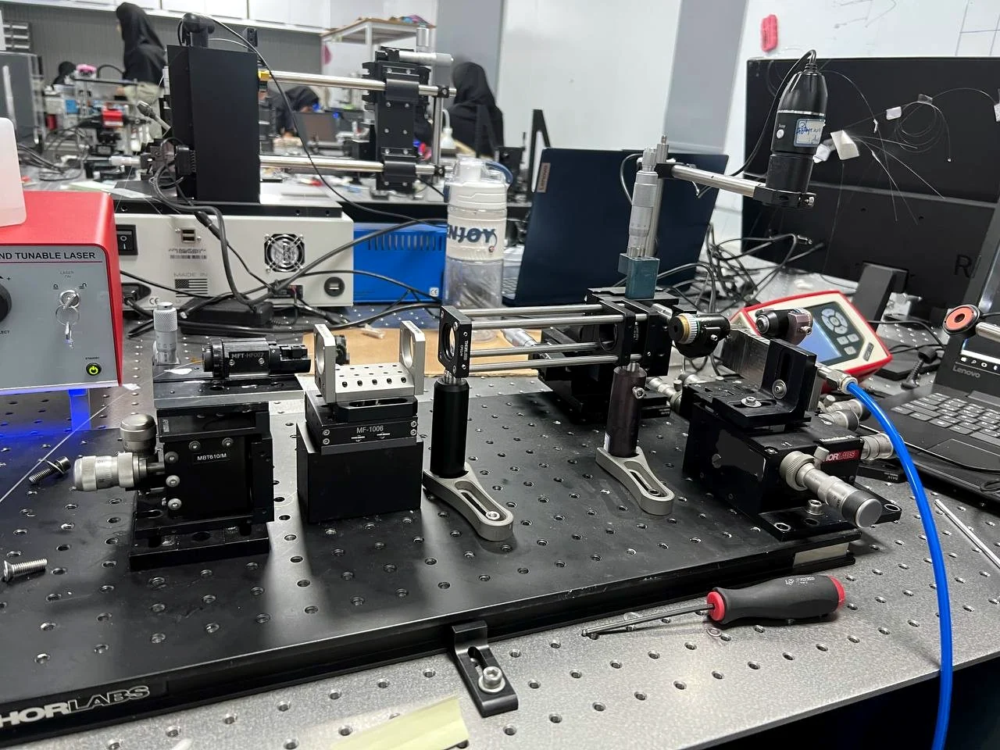
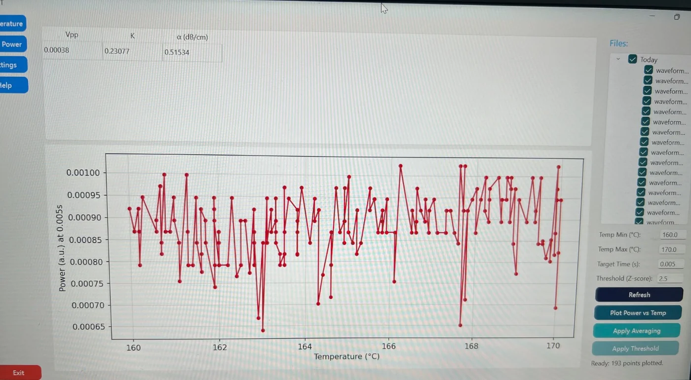
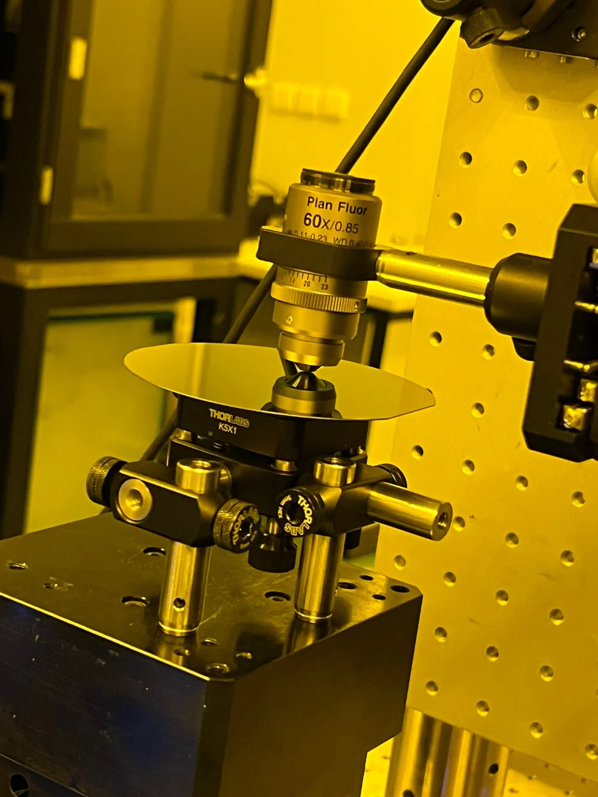
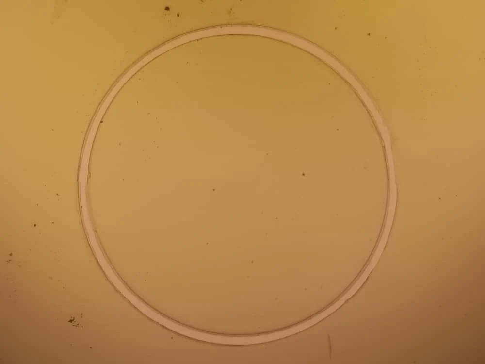
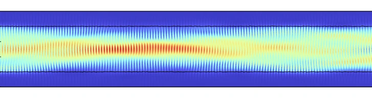
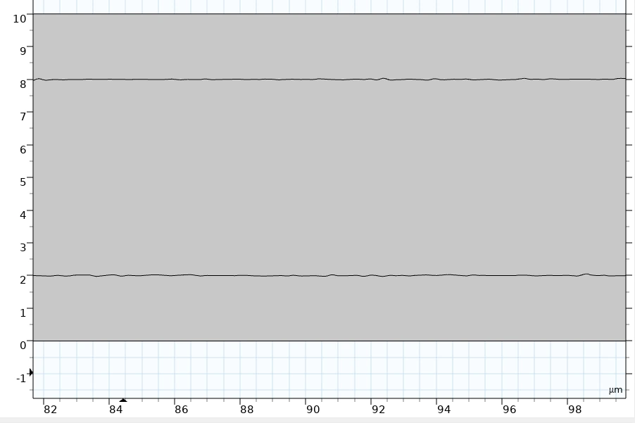

Laboratory
Five project areas, with expandable technical details
Each section starts with a fast summary. Open any project to see the experimental goal, my contribution, the present result, and the next technical questions.
Lithium niobate, silicon nitride, free space optics, cleanroom fabrication, and computational analysis.
01PPLN
Periodic poling of magnesium doped lithium niobate
Domain inversion using metallic electrodes and liquid electrolyte contact, with emphasis on duty cycle and phase matching.
PPLN
Periodic poling of magnesium doped lithium niobate
Domain inversion using metallic electrodes and liquid electrolyte contact, with emphasis on duty cycle and phase matching.
What the work involved
I worked with two poling approaches for MgO:LiNbO₃. In the metallic electrode route, patterned electrodes define the electric field distribution. In the liquid electrolyte route, the solution forms the electrical contact needed for domain inversion under high voltage.
Optimization and result
The work included optimizing the duty cycle and phase matching conditions. We reached second harmonic generation, which confirmed useful nonlinear conversion behavior. We did not obtain SPDC from the device during this stage, so I describe it as an important experimental step rather than a completed photon pair source.
High voltage poling, metallic electrodes, electrolyte contact, domain inversion, phase matching, and second harmonic measurements.
Open experience report02SPDC
Development path toward photon pair generation
Connecting poling quality, quasi phase matching, optical coupling, filtering, and coincidence ready detection.
SPDC
Development path toward photon pair generation
Connecting poling quality, quasi phase matching, optical coupling, filtering, and coincidence ready detection.
Experimental objective
The objective is to use periodically poled lithium niobate for spontaneous parametric down conversion and, ultimately, correlated or entangled photon pair generation. The project requires the poling period, duty cycle, pump wavelength, temperature, polarization, and collection geometry to work together.
Current interpretation
Second harmonic generation provided evidence that the nonlinear interaction and phase matching direction were meaningful. SPDC was not observed in the available measurements. The next work would focus on lowering optical loss, improving pump coupling, checking the poling uniformity, refining temperature tuning, and building a more sensitive filtered detection chain.
SHG and SPDC are connected through the same second order nonlinearity, but SPDC requires a much more sensitive measurement chain because the generated photon flux is weak.
03Propagation loss and GUI
Propagation loss coefficient measurement for photonic waveguides
A free space optical bench, controlled temperature scan, photodetector acquisition, and a graphical interface for extracting propagation loss.
Propagation loss and GUI
Propagation loss coefficient measurement for photonic waveguides
A free space optical bench, controlled temperature scan, photodetector acquisition, and a graphical interface for extracting propagation loss.
Measurement concept
The fabricated photonic waveguide is coupled with free space optics and its transmitted intensity is recorded. At 1550 nm, the polished end faces form a low finesse Fabry Pérot resonator. Changing the sample temperature changes the optical phase, which scans the transmission fringes without changing the physical length of the device.
How the propagation loss is calculated
The analysis follows the fringe contrast method described by Regener and Sohler. The maximum and minimum transmitted intensities determine the contrast. The contrast gives a combined loss and reflection factor. Using the waveguide length and an estimate of the end face reflectivity, the program calculates an upper limit for the propagation loss coefficient in dB per centimeter.
My contribution
I worked on optical alignment, coupling optimization, temperature dependent measurements, signal acquisition, and the software workflow that converts the measured traces into a propagation loss value. The objective was a repeatable measurement process rather than a single manual calculation.
Graphical interface
The GUI loads the recorded waveforms, groups the data by temperature, displays the measured power trace, supports averaging and threshold based cleaning, calculates fringe contrast, and reports the propagation loss coefficient. This creates a direct connection between the raw measurement and the final result.


04SiN
Silicon nitride direct write structures and microscope analysis
Waveguides, ring structures, couplers, and image based assessment of fabricated geometry.
SiN
Silicon nitride direct write structures and microscope analysis
Waveguides, ring structures, couplers, and image based assessment of fabricated geometry.
Direct write fabrication
I used direct write lithography for silicon nitride photonic patterns that included waveguide arrays, ring structures, and coupling regions. The work required preparing the write design, controlling the critical dimensions, checking continuity, and inspecting the fabricated pattern under the microscope.
Written ring structure
The ring shown here is a real structure that I wrote and then inspected under the microscope. It provides a direct record of the fabricated geometry and can be compared with the intended design before optical characterization.
Design and characterization
The related design work includes power dividers and directional couplers at 1550 nm. Microscope images can be processed to extract the actual boundaries, width variation, and edge roughness, which helps connect fabrication quality to optical loss and coupling behavior.


05Machine learning, COMSOL, and image processing
A computational route for estimating propagation loss
Field simulations and microscope derived geometry are connected to a predictive model for the loss coefficient.
Machine learning, COMSOL, and image processing
A computational route for estimating propagation loss
Field simulations and microscope derived geometry are connected to a predictive model for the loss coefficient.
Project idea
The project aims to build a practical system for estimating propagation loss from fabricated device geometry. Microscope images are processed to identify the waveguide boundaries and extract parameters such as width variation and edge roughness. COMSOL then models how the optical field interacts with realistic structures.
Role of machine learning
A machine learning model can learn the relationship between simulated or measured geometry features and the resulting propagation loss coefficient. The long term goal is a faster screening tool that supports the laboratory measurement rather than replacing it.
What the COMSOL image shows
The field map shows the guided optical mode propagating through a structure with geometry variation. The intensity distribution provides the physical input needed for studying scattering and confinement before building the predictive model.

